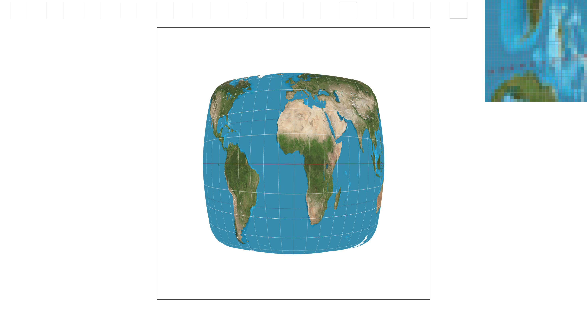
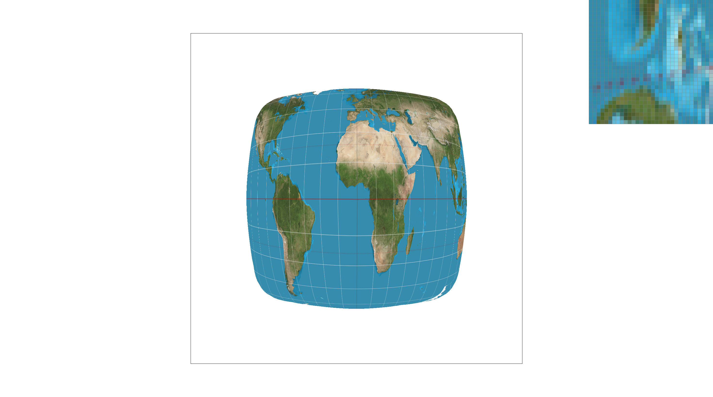
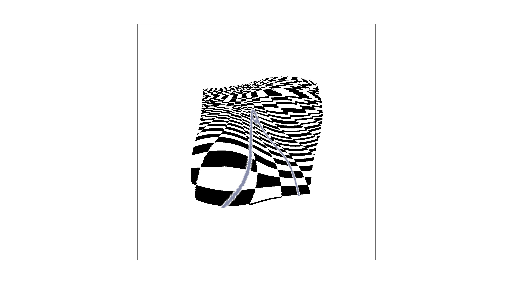
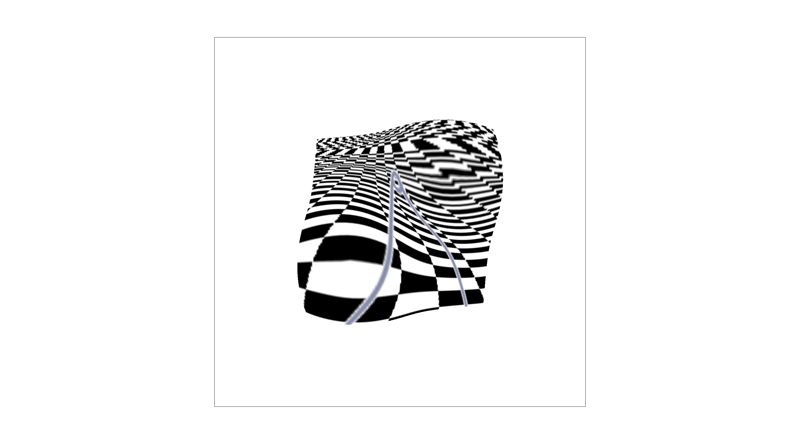

CS184/284A Fall 2026 Homework 1 Write-Up
Link to webpage: https://cal-cs184-student.github.io/hw1-bc0-writeup/
Link to GitHub repository: github_repo
Overview
The high level overview is I built that part of a video game's graphics options menu that allows me to "improve" the graphical rendering.
What was interesting was getting into the low level code details and math of how these graphics modification options in those video game menus, work. Though I have had a general idea of how it works having done game dev, particularly VR work in Unity, I have never really had to implement them til now. It reminds me of when I had to write out how a linked list works in c++ by hand (like paper to pencil), including the memory management. It is also always fun to see the application of different algorithims for new specific different types of problems (so in this case, for graphics rendering).
Task 1: Drawing Single-Color Triangles
I get 3 vertices of a triangle. I take the minimum and maximum of the x coordinates and y coodinates to get the horizontal and vertical extents, respectively. I floor the minimums and ceiling the maximums so that the box is expressed as an integer pixel coordinate. I then clamp this to the framebuffer's dimensions, as to prevent any writing outside of the constraints.
Within every pixel in this bounding box, I take a sample point at the center of the pixel, and run a point in triangle test using the edge functions. For each of the triangle's edges, the edge functions tells me what side of the line the sample point falls on. One side is positive, the other is negative and zero if it is directly on the line. A point is inside a trinagle then when it is on the same side of all three of the edges, as in all not negative or all not positive. We use the equals or for evaluation so that if a sample sits on an edge, it will still count as inside. This means edges are filled rather than unfilled just in case. Any sample that successfully passes this test gets colored in by the fill_pixel algorithm.
Why it is no worse than checking every sample in the bounding box:What we are comparing against is to "iterate overy every pixel in the bounding box and to do a constant runtime check on whether it is inside or outside" This algorithm does essentially the same. The two outer loops go over (x_min, x_max) * (y_min, y_max) which is the bounding box. The inner loop goes over the sample rate, which is linear. Then the edge function checks are O(1). This gives us n * O(1) = O(n). So this algorithm is O(n) where n is the number of pixels in the bounding box, which is no worse than checking every sample in the bounding box.
Task 2: Antialiasing by Supersampling
Super sampling algorithm.
Data Structure:
The data structures were determined already in rasterizer.h I use sample_buffer, a vector of color, of size width * height * sample rate. It behaves as a temporary frame buffer. Each pixel, a (x,y) coordinate, has a block of sample_rateColor entries, beginning at (width * y + x) * sample_rate. Every subsample of that pixel (s) is at base + s. Having each pixel's sample adjacent in memory optimizes the downsampling at the end to be very quick.Modifications to rasterization pipeline:
In rasterize_triangle, i check the triangle's bounding box, and loop over the pixels in it. Within each pixel i do a square root of the sample rate times itself, creating a grid of sample points. Each higher sampling rate increases the number of sub cells. Each sample point within is tested independently against the three edge functions (both orders forward and backwards depending on which starting vertex) If a sample is inside the range, the triangle's color is written into the sample slot. If it is not, the sample is left alone so if qualified to be filled in by an earlier call, it retains the color that was placed in it then. Then the resolve_to_framebuffer takes an average of each pixel's sample_rate samples and then converts to a float which goes into rgb_framebuffer_target (8 bit description of a color).Supersampling Usefulness:
Rendeirng an image is an attempt to decieve us into thinking than image is a whole, when in fact it is made up of many discrete pixels. The more pixels we have, the more accurately we can represent the image. However, there are limits to how many pixels we can have, and so we must make do with a limited number of pixels. When we have a limited number of pixels, we can use supersampling to increase the "effective number of pixels". Supersampling works by rendering the image at a higher resolution than the final output resolution, and then downsampling the image to the final output resolution. This allows us to capture more detail in the image, and reduces aliasing artifacts.Supersampling anti aliases my triangles by:
At the edge of a rendered triangle, a pixel is only partially covered by the vertices that describe the triangles that make up the triangle image. If we decide to only show a pixel or not, as there are less pixels describing a part of the triangle (so particularly at the edges), the more aliased it will be. When we super sample, we are effectively increasing the number of pixels that describe the triangle, and so we can more accurately determine how much of a pixel is covered by the triangle. Then pixels around the originally color sampled pixels can be color adjusted to various degrees of that triangle's color and white. When zoomed out, this makes the triangle edges seem smother.


Task 3: Transforms
My cubeman is doing a dance known as the "stanky leg" where one whole leg is rotating into a circular motion while the other is bent slightly in order to support this.
Task 4: Barycentric coordinates

Barycentric coordinates are a way of describing any point relative to a triangle as a weighted mix of its three vertices, instead of a 2 coordinate x,y position. A triangle with 3 vertices, A, B, and C, can have a point P in relation to it. For a triangle with vertices A, B, and C, any point P in the plane can be written as:
where α, β, γ are the barycentric coordinates. The value of these coordinates always add up to 1. Each weight tells you how much influence that vertex has on the point. The closer it is to 1, the closer it is to that vertex point. At the center of an equilateral triangle, each barycentric coordinate would be 1/3 , as they would all have equal pull. If a coordinate is in the negative, that means it is outside the triangle, on the opposite side of that particular vertex.
In the rasterizer, I use barycentric coordinates two ways. The first, is an inside/outside the triangle test: a sample point is inside the triangle exactly when all three weights are non-negative or all non-positive, depending on the winding order. Basically an edge function sign test. Secondly if I can confirm a point is inside i then use the weights to interpolate per vertex data smoothly and consistently through the triangle, blending the vertex colors.

Task 5: "Pixel sampling" for texture mapping
When rasterizing a textured triangle, each vertex carries a texture coordinate along with its position coordinates. For any point inside the triangle, barycentric interpolation gives an interpolated texture coordinate, which most of the time won't land exactly on a particular texture pixel. Since the texture image is a discrete grid of pixels but this interpolated coordinate is continuous, pixel sampling is the process of translating that coordinate into a color. This is done by figuring out which texture pixels to read and how to combine them.
How I implemented it
In rasterize_textured_triangle, I reused the same bounding-box-and-edge-function structure as the solid-color and interpolated-color triangle rasterizers. For each sample point that passes the inside test, instead of computing a blended Color directly from the vertices, I compute blended (u, v) texture coordinates using the same barycentric weights (alpha, beta, gamma) that the color-interpolation triangle uses for c0, c1, c2. That interpolated (u, v) is then passed to either Texture::sample_nearest or Texture::sample_bilinear, depending on the current PixelSampleMethod, and the returned Color is written into that sample's slot in sample_buffer. Inside the Texture class, both sampling functions first convert the normalized (u, v) ∈ [0,1] coordinate into texel coordinates by multiplying by the mip level's width and height.sample_nearest floors the scaled coordinate to the nearest integer texel and returns that texel's color directly via get_texel.
sample_bilinear instead finds the four texels surrounding the (non-integer) scaled coordinate, and linearly interpolates between them — first along x (blending the top two and bottom two texels), then along y (blending those two results) — weighted by how far the sample point sits between the texel centers.
Both clamp their texel indices to stay inside the mip level's valid range, since floating-point (u, v) can land slightly outside [0,1] due to interpolation error near triangle edges.Nearest vs. bilinear
Nearest-neighbor sampling picks the single closest textured pixel and uses its color. It is computationally cheap. But when the texture is magnified (displayed larger than its native resolution), it produces visible blocky squares, since many adjacent screen pixels end up reading the exact same textured pixel.Bilinear sampling blends the four nearest textured pixels based on the sample point's position between them. This is computationally more expensive (four lookups and three lerps aka linear interpolations, instead of one lookup compared to nearest neighbor sampling). Its advantage is that it smooths out the transition between texels, so magnified textures look soft and continuous rather than blocky.


Raising the sample rate does not make the nearest neighbor algorithm start interpolating between the texels. You are just taking more nearest neighbor samples at different sub pixel positions and averaging the discrete results. If enough of a pixel’s subsample points all land in the same texel which can happen when a texture is magnified, you still get a flat and blocky image. All the subsamples “agree” basically. Blockiness begins to soften when pixels are at a texel boundary, because some subsamples will land in one texel and some in the adjacent different ones. The average produces a gradient but does not “smooth” things out like bilinear sampling does. Super sampling solves geometric and screen space aliasing where as bilinear works through texture reading and barycentric weighting. A high super sample rate can sort of approximate what bilinear filtering is doing at the edges of images but it is not blending them like bilinear sampling is.
Task 6: "Level Sampling" with mipmaps for texture mapping
Level sampling uses mipmaps to deal with minification, which is the opposite of the magnification problem in Task 5. In minifcation the problem is that one screen pixel overlaps too many texels, so reading closeby texels (nearest sampling) or blending (bilinear sampling) means most of the texture detail in that area is loss. As the image or camera moves, the inconsistency of which texel gets sampled distorts the image and creates high frequency noise.
Mipmaps then are a precomuted pyramid of progressively lower resolution, pre blurred versions of a texture. (For instance mipmap[0] is full resolution, and each level down is half the width and height of the previous). We estimate how much texture area a given screen pixel covers, and then sample from the mip level that is equivalent to about one texel per pixel at that point. Courses depth mips already have details removed so by reading it, we won’t get any aliasing problems.

Worst overall, both the near squares and farther ones are very blocky and noisy.

The linear effect makes squares closer to the front smoother since it is "magnified" relatively to the rear which is still noisy and aliased. This is because when a pixel covers a lot of texels (far away) it still looks bad since we are not adjusting for minifcation

In this case the front closer squares are still blocky since we are back to p nearest. The rear squares however are smoother and more blurred together since we are now using coarses mip levels to make up for minifcation

Best overall with both effects working. However, it is technically the most expensive.
Implementation
Choosing the level (Texture::get_level): for a given screen point, I estimate how fast (u, v) changes as the point moves one pixel to the right (dp_dx_uv) and one pixel down (dp_dy_uv). These come from sp.p_dx_uv - sp.p_uv and sp.p_dy_uv - sp.p_uv, computed in rasterize_textured_triangle by barycentrically interpolating (u,v) at (x,y), (x+1,y), and (x,y+1). I scale both difference vectors by the full-resolution texture's width/height to convert them from normalized uv units into texel units, then take the larger of the two vectors' magnitudes as L, the number of texels a one-pixel step covers. The mip level is log2(L): if a pixel covers 2^k texels, level k is the resolution where that pixel covers roughly one texel.
How each of the LevelSampleMethodlsm works
L_ZERO ignores the computed level entirely and always samples level 0 (the Task 5 behavior).
L_NEAREST rounds the continuous level to the nearest integer mip level (clamped to the valid range) and samples that level once, via sample_nearest or sample_bilinear depending on psm.
L_LINEAR takes the floor and ceiling of the continuous level as two adjacent integer levels, samples both independently, and linearly blends them by the fractional part of the level. Combined with psm == P_LINEAR, this is trilinear filtering: bilinear within each level, linear across levels.
TRADEOFFS!
For pixel sampling, if we use "nearest" we trade speed (one texel lookup, vs 4 + 3 lerps) for a smoother final image under magnification. Same memory cost since we just read from the same single level texture image. Doesn't help with aliasing or minification.
For level sampling, we trade memory and some speed for anti aliasing when there is minification. Mipmaps cost about 1/3 extra memory (the convergence of the geometric series that applies to it). L_Zero costs one sample call, L_Nearest costs one extra texture leve lookup in addition to that. L_Linear doubles the lookup cost (which can be affected by what pixel sampling method is used). This helps for smoother transitions between mip levels are the camera moves.
Sampling rate is the most costly of the three. It is a brute force anti aliasing by evaluation of the whole render pipeline. It does an inside / outside test at the subpixel locations, and then averages results. This helps with pointy edges and other things related to geometric coverage. The cost is a multiplicative and scales with the sample rate. If you double the samples per pixel then you double the memory use and computation costs, since every triangle test and texture read happens multiplicatively for each pixel instead of one.